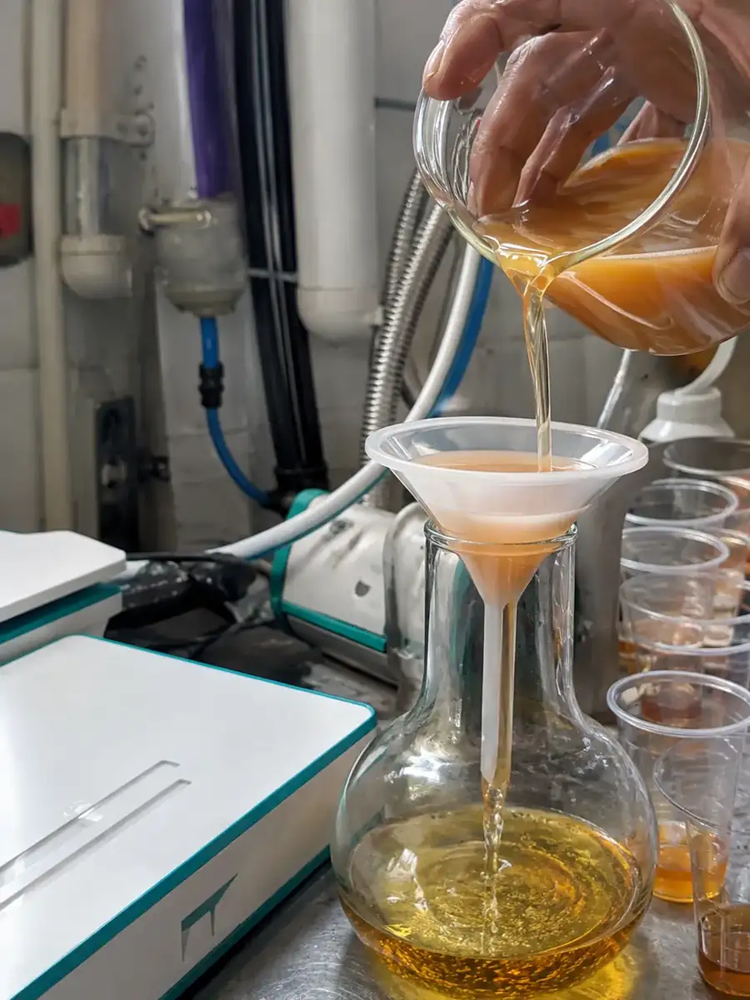
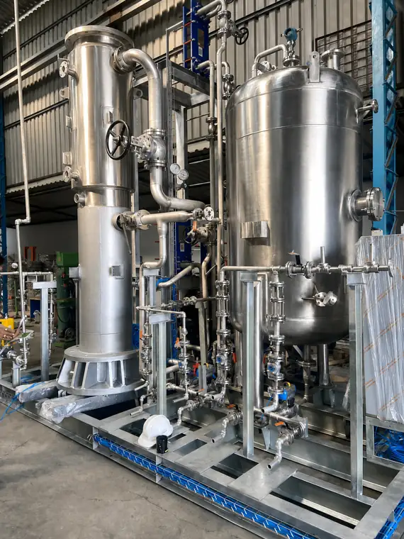
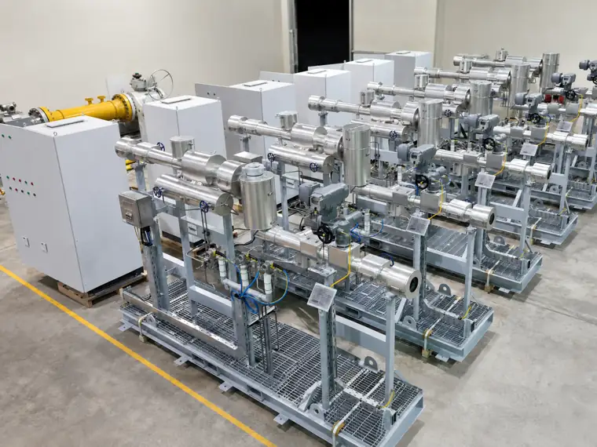

Process requirements
Material characteristics, process steps, operating conditions, throughput and performance objectives.
Process systems | From pilot development to industrial applications
Instron Technologies engineers Pilot and Demonstration Plants and modular Industrial Process Skids, bringing together process design, mechanical systems, instrumentation, automation and site interfaces. Each system is developed around your operating objectives, technical requirements and project execution needs.

The engineering starting point
An effective process system starts with the application, the operating objective and the technical constraints. Before equipment is selected, we set the engineering requirements in four areas.
Material characteristics, process steps, operating conditions, throughput and performance objectives.
Major equipment functions, piping requirements, mechanical arrangements and existing equipment interfaces.
Required measurements, operating sequences, control functions, alarms and data requirements.
Available utilities, installation requirements, acceptance criteria and commissioning responsibilities.
This coordinated engineering basis aligns equipment selection, system integration and project execution.
Two ways we deliver
 01
01Instrumented process systems for experimental trials, technology validation, performance evaluation and scale-up decisions.
Explore Pilot & Demonstration Plants 02
02Modular process systems for defined production duties, with equipment, piping, instrumentation, automation and facility interfaces engineered together.
Explore Industrial Process SkidsApplications and system functions
 Carbon Capture & Gas Separation
Carbon Capture & Gas SeparationProcess systems for gas handling, separation and treatment, at experimental or industrial scale.
 Battery Recycling & Critical Minerals
Battery Recycling & Critical MineralsEngineered systems for material treatment, extraction, recovery and process development.
Solvent Recovery & DistillationIntegrated systems for solvent separation, purification and recovery.
 Hydrogen & Electrochemical Processes
Hydrogen & Electrochemical ProcessesProcess systems for hydrogen processing, gas handling and electrochemical applications.
Systems for membrane-based and other specialized separation processes.

Extraction & Specialty ProcessingModular systems for extraction, chemical processing and application-specific treatment.
Boundary: Application examples describe areas where the engineering model can apply. They are not universal process-range or performance claims.
Process-system integration
A modular process system may combine several technical layers. The value comes from defining how they interact.
Define process requirements, material flows, operating conditions, equipment duties and major utilities.
Develop equipment arrangements, piping layouts, modular structures and maintenance access.
Specify measurement and control devices for the process conditions, accuracy and operating requirements.
Develop control philosophies, operating sequences, alarms, interlocks, HMI and PLC/SCADA integration.
Define data collection, trending and reporting, with PlantON™ by Instron Technologies where it adds value.
Coordinate installation, utility connections, equipment interfaces, testing and handover responsibilities.
Typical engineered scope
The exact deliverable set depends on project stage and scope. Typical engineering outputs are grouped in four packages.
Process description, design basis, process flow diagrams, P&IDs, major calculations and equipment specifications.
Equipment arrangements, piping and mechanical layouts, skid design documentation and integration requirements.
Instrument specifications, I/O lists, electrical drawings, control philosophy and automation documentation.
Inspection procedures, FAT/SAT documentation, commissioning records, manuals and agreed handover deliverables.
A useful engineering package should reduce ambiguity between the process owner, equipment suppliers, fabricators, automation team, site team and the people who will eventually operate the system.
Integrated equipment
Each project requires its own process basis. Instron Technologies does not present one standard skid as suitable for every process.
Questions and scope boundaries
No. Process Skid Plants can apply to research skids, pilot systems, demonstration systems and defined modular production duties where the process and project basis support that approach. The correct architecture depends on the application.
Yes, when there is enough scientific or process ownership to define known inputs, uncertainties and the question the next engineering phase must answer. Early work may be feasibility, concept or basic engineering rather than a build commitment.
No. Scope is project-specific. Instron Technologies’ role may be engineering only, engineering plus procurement/integration, controls and data integration, or a broader system package. The fabrication, procurement, inspection and site responsibilities must be defined explicitly rather than assumed.
Often, yes. The project should define battery limits, mechanical/process interfaces, controls, communications, safety responsibilities, utilities, documentation and acceptance requirements for each package.
Yes, where relevant. Controls can be engineered as part of the process-system scope, and PlantON can be considered for selected operating, experiment, traceability or reporting requirements. Neither should be added simply because the technology is available; they should serve the process and operating objective.
No. A pilot can improve the engineering basis by generating operating evidence and exposing scale-dependent behaviour. Scale-up still requires engineering judgement and project-specific analysis.
Selected work
Client names are withheld. References are available on request.
Whether you have an early process concept, a pilot requirement or an industrial application, our engineering team can help you plan the next stage. Share your process, operating requirements and available technical information to begin the discussion.



